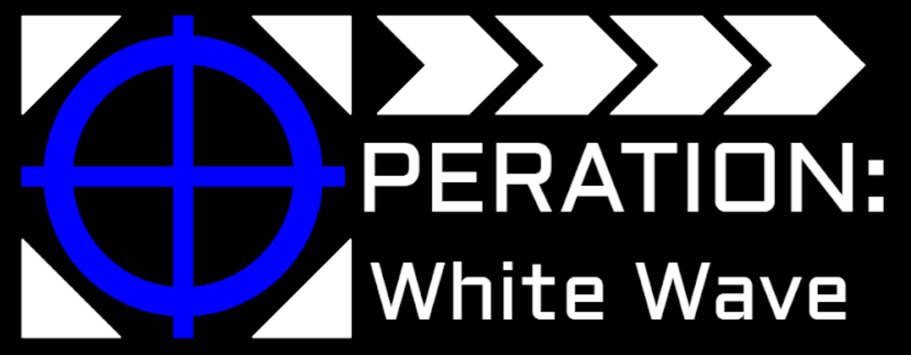
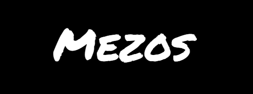

Overwrought
Overwrought is a 3D Puzzle-Platformer which focuses on mental health themes. This is a collaborative project with my classmates from Questar III Gaming and Multimedia. More info can be found in the Projects tab

MESOS
MESOS is a short story series which focuses on individual dinosaurs and prehistoric creatures from the Mesozoic era. More information can be found in the Projects tab, as well as excerpts from some of the stories.
